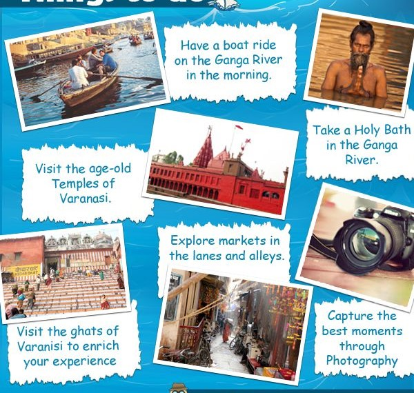

VARANASI:

- Spiritual Hub: Oldest living city known for its spiritual significance in Hinduism.
- Ghats:Ghats: Famous for its ghats along the river Ganges, used for rituals, bathing, and ceremonies.
- Temples: Home to several historic temples including Kashi Vishwanath Temple and Sankat Mochan Hanuman Temple.
- Culture: Culture: Rich in classical music, dance, and traditional art forms.
- Banarasi Silk:Banarasi Silk: Renowned for its Banarasi silk sarees, known for their intricate designs and craftsmanship.
- Education: Banaras Hindu University.